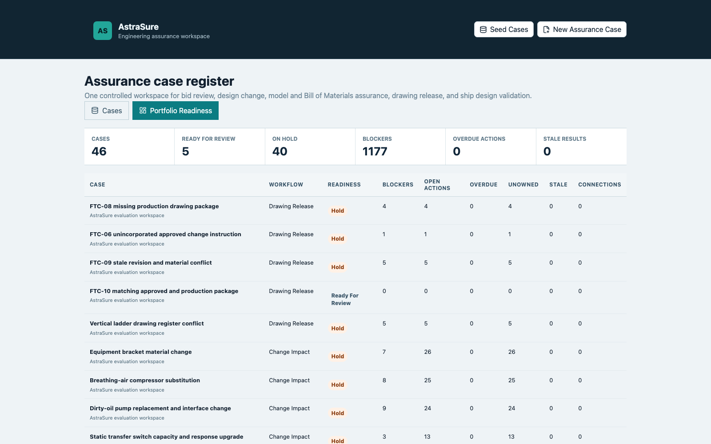

Prioritise unsupported claims, stale reviews and unresolved discrepancies.
AstraSure
Engineering assurance, accelerated by AI.
Turn fragmented requirements, supplier evidence, drawings and engineering records into traceable findings your reviewers can act on.
Evidence-backedEvery material finding remains connected to its source.
Reviewer-controlledEngineering authority stays with accountable people.
Deployment-readyBuilt for hosted, private and restricted environments.
01
The assurance gap
The evidence exists. The decision is still difficult.
Complex engineering reviews span specifications, amendments, supplier submissions, drawings, certificates, calculations and revisions. Teams spend more time reconstructing context than exercising engineering judgement.
AstraSure creates a controlled view of what applies, what is supported, what conflicts and what still needs a decision.
Unsupported compliance
Revision conflict
Configuration drift
Unowned findings
02
The platform
One place to understand readiness across engineering reviews.
Reviewers see priority, ownership, unresolved evidence and decision status without losing the underlying technical record.

Move from a finding to the exact source context used to support it.
Keep ownership, rationale, status and review history with the work.
03
Applications
A shared assurance layer for recurring engineering decisions.
Begin with the review that hurts most. Add adjacent decisions without rebuilding the evidence context each time.
Technical Bid Review
Evaluate supplier submissions against buyer requirements and supporting evidence.
ProcurementDesign Change Impact
Understand cross-discipline consequences before selecting or approving a change.
EngineeringModel-BOM Assurance
Identify configuration discrepancies between design intent and material records.
ConfigurationDrawing Release Assurance
Verify that production information reflects the intended and approved revision state.
ProductionDesign Validation
Support engineering checks with applicable rules, cited evidence and accountable review.
Compliance04
Assurance by design
Built for consequential work, not casual answers.
AstraSure is designed around evidence, review authority and measurable quality. AI accelerates interpretation; it does not silently approve engineering decisions.
Traceable by default
Material conclusions retain inspectable source context.
Neuro-symbolic AI
Model interpretation is constrained by explicit requirements, evidence links and engineering rules.
Human authority
Reviewers accept, reject, qualify and assign every consequential disposition.
Measured performance
Accuracy, support, overrides and review time can be evaluated on agreed cases.
Quantized edge inference
Our roadmap targets customer-controlled hardware and disconnected environments with compact local models.
05
Where it applies
For organisations that cannot treat technical evidence casually.
Starting with shipbuilding and defence procurement, with the same need across aerospace, energy, rail, infrastructure and advanced manufacturing.
ShipbuildingDefenceAerospaceEnergyRailInfrastructureAdvanced manufacturingPublic procurement
06
Company
AstraSure is building the assurance operating layer for complex engineering.
Founded by Omkar Ghugarkar, AstraSure starts with document-heavy technical reviews where evidence gaps and inconsistent revisions create immediate risk.
The company is working with design partners to validate measurable improvements in review time, citation quality and material issues found.
Design partner programme
Bring one difficult technical review.
Define an approved evidence pack, compare AstraSure with the current process, and measure the result.